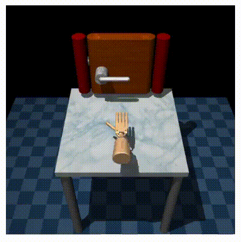
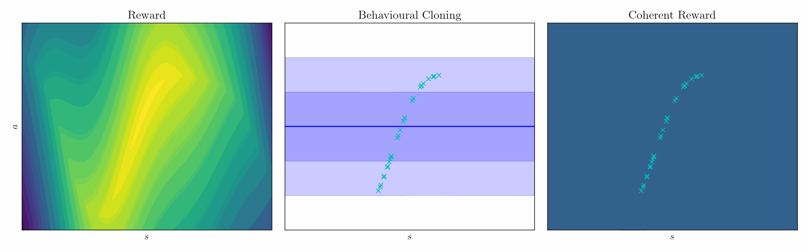

Prior to starting my PhD, I worked on developing Versius, a novel robotic system for laparoscopic surgery, from prototype to product.
In 2022-23, I did an internship at Google DeepMind with the Robotics team, hosted by Sandy Huang and Nicholas Heess.
I am broadly interested in designing efficient inference-based algorithms for data-driven robotics using Bayesian inference and inductive biases.
Research Interests
robotics, optimal control, approximate inference, system identification
Research Highlights

Inferring Smooth Control: Monte Carlo Posterior Policy Iteration with Gaussian Processes
Watson, J., Peters, J. (2022) Conference on Robot Learning[oral].
paper /
code /
webpage /
slides

Coherent Soft Imitation Learning
Watson, J., Huang, H. S., Heess, N. (2023) Internship project. preprint /
webpage
Stochastic Control as Approximate Input Inference
Watson, J., Abdulsamad, H., Findeisen, R., Peters, J. (2021) Under review. preprint /
code
Neural Linear Models with Gaussian Process Priors
Watson, J.*, Lin, J. A.*, Klink, P., Peters, J. (2021) Advances in Approximate Bayesian Inference (AABI) openreview,
* equal contribution
Latent Derivative Bayesian Last Layer Networks
Watson, J.*, Lin, J. A.*, Klink, P., Pajarinen, J., Peters, J. (2021) Artificial Intelligence and Statistics (AISTATS) pdf, * equal contribution
A Differentiable Newton-Euler Algorithm for Real-World Robotics
Lutter, M., Silberbauer, J., Watson, J., Peters, J. (2021) Submitted to IEEE Transactions on Robotics preprint
Benchmarking Structured Policies and Policy Optimization for Real-World Dexterous Object Manipulation
Funk, N., Schaff, C., Madan, R., Yoneda, T., Urain de Jesus, J., Watson, J., Gordon, E. K., Widmaier, F., Bauer, S., Srinivasa, S. S., Bhattacharjee, T., Walter, M. R., Peters, J. (2021) IEEE Robotics and Automation Letters, Special Issue: Robotic Grasping and Manipulation Challenges and Progresspreprint